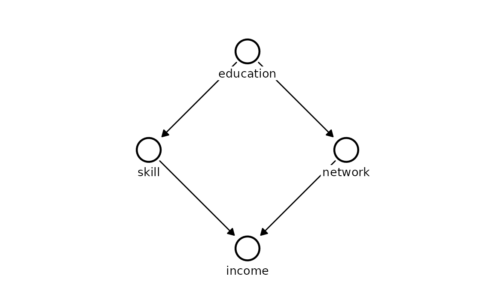
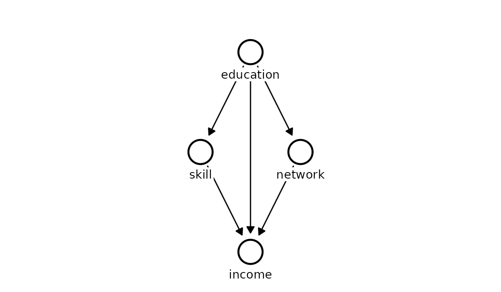
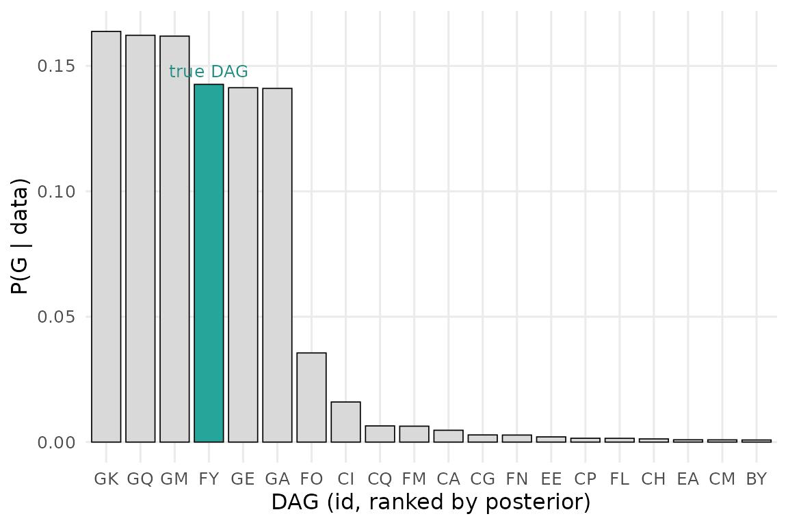

The other vignettes take the DAG as given. But the DAG is itself a hypothesis about how a system works, and often it is exactly what we want to learn. Kagu can treat structure discovery as Bayesian inference over graphs: fit a GCM to every candidate DAG, and turn the marginal likelihoods into a posterior distribution over structures,
\[ P(G \mid X) \;\propto\; P(X \mid G)\, P(G). \]
Here \(P(X \mid G)\) is the marginal likelihood of the data under graph \(G\) (computed in closed form from the per-node Gaussian-process fits) and \(P(G)\) is a prior over structures (currently uniform). Rather than returning a single “best” graph, this returns a full probability distribution - an honest representation of what the data can and cannot tell us about causal structure.
A worked example
We simulate a four-variable system with a known structure.
education is a root cause of both skill and
network; income is driven by
skill and network. There is
no direct education → income edge, and
skill and network are not directly linked.
true_dag <- list(
education = c(),
skill = "education",
network = "education",
income = c("skill", "network")
)
kagu_plot_dag(true_dag, node_pos = list(
education = c(0, 0),
skill = c(1, -1),
network = c(1, 1),
income = c(2, 0)
))
n <- 50
education <- rnorm(n)
skill <- 0.8 * education + rnorm(n, sd = 0.6)
network <- 0.6 * education + rnorm(n, sd = 0.6)
income <- 1.0 * skill + 0.7 * network + rnorm(n, sd = 0.6)
df <- data.frame(education, skill, network, income)Running the search
The number of DAGs grows explosively with the number of variables, so
we narrow the space with background knowledge. Here we know only that
education comes first - nothing causes a person’s education
in this system - so we use disallowed to forbid any edge
pointing into education. The ordering among
skill, network, and income is
left for the data to resolve. This is exactly the kind of light domain
knowledge a researcher can bring to a problem.
disallowed <- list(
c("skill", "education"),
c("network", "education"),
c("income", "education")
)
result <- KaguModel$discover(df, disallowed = disallowed)
result
#> <DiscoveryResult: 199 DAGs, 25 unique local fits>
#> # A tibble: 5 × 5
#> rank id n_edges log_marglik posterior_prob
#> <int> <chr> <int> <dbl> <dbl>
#> 1 1 GK 5 -191. 0.164
#> 2 2 GQ 6 -191. 0.162
#> 3 3 GM 6 -191. 0.162
#> 4 4 FY 4 -191. 0.143
#> 5 5 GE 5 -191. 0.141The search evaluated every DAG consistent with that constraint, but -
thanks to the Markov factorisation - only had to fit each unique
node ~ parents model once (far fewer fits than DAGs).
Tighter constraints: required edges
For larger systems, the number of candidate DAGs can easily exceed
Kagu’s safety limits (capped at \(2^{24}\) subsets, roughly 5 unconstrained
nodes). If you have stronger structural beliefs-such as an edge that
absolutely must exist-you can pass required. This
shrinks the search space dramatically by removing those edges from the
combinatorics.
Explicit DAG comparison: dags
Sometimes you don’t want to search the whole graph space. If you have
a few specific, theoretically motivated hypotheses, you can pass them
directly via dags. Kagu will skip the combinatorial search
entirely and just compute the posterior probabilities over your explicit
models.
The posterior over DAGs
$summary() ranks the structures by posterior
probability. Each row is a whole DAG, referenced by a short
id (here the enumerated graphs get ids "A",
"B", "C", …; had we passed a named
list of DAGs, those names would be used instead).
posterior_prob is \(P(G \mid
X)\).
result$summary()
#> # A tibble: 10 × 5
#> rank id n_edges log_marglik posterior_prob
#> <int> <chr> <int> <dbl> <dbl>
#> 1 1 GK 5 -191. 0.164
#> 2 2 GQ 6 -191. 0.162
#> 3 3 GM 6 -191. 0.162
#> 4 4 FY 4 -191. 0.143
#> 5 5 GE 5 -191. 0.141
#> 6 6 GA 5 -191. 0.141
#> 7 7 FO 6 -193. 0.0355
#> 8 8 CI 6 -194. 0.0160
#> 9 9 CQ 6 -195. 0.00645
#> 10 10 FM 5 -195. 0.00635To see what a given structure actually is, look it up by its id with
result$get_dag(id), or plot it directly:
top_id <- result$summary()$id[1]
result$plot_dag(top_id)
No single DAG runs away with the posterior - the top few structures each hold only around a sixth of the mass. That is not a defect: with a handful of variables and this much noise, the data simply cannot single out one graph. What it can do is concentrate the mass onto a small cluster of closely-related structures that all agree on the important causal edges, and rule the rest out. We can’t always name the one true DAG, but we can zoom in on the handful that matter.
The histogram makes the shape of the posterior clear. With the true data-generating DAG highlighted, we can see how much of the probability mass it captures.
result$plot(true_dag = true_dag)
Edge probabilities
Often we care less about the single best graph than about
specific causal questions - does this edge exist, and in which
direction? $edge_probabilities() marginalises over the
whole posterior to give the probability of each directed edge, \(P(\text{from} \to \text{to} \mid X) = \sum_{G \ni
\text{edge}} P(G \mid X)\).
result$edge_probabilities()
#> # A tibble: 9 × 3
#> from to prob
#> <chr> <chr> <dbl>
#> 1 education network 0.992
#> 2 education skill 0.991
#> 3 network income 0.959
#> 4 skill income 0.917
#> 5 education income 0.575
#> 6 network skill 0.365
#> 7 skill network 0.315
#> 8 income skill 0.0834
#> 9 income network 0.0396This is where the posterior becomes genuinely useful. The four true
edges (education→skill, education→network,
skill→income, network→income) each carry
almost all of the probability - the data is confident they exist and
point the way they do - and the clearest edge reversals are
correctly assigned low probability. What lingers is a redundant direct
education→income edge: even though education’s effect on
income is fully mediated by skill and network, observational
data at this sample size cannot completely exclude a direct path, so
that edge keeps a moderate probability rather than collapsing to zero.
Kagu reports the residual ambiguity honestly instead of pretending the
edge is ruled out.
Effects under structural uncertainty
When the structure is uncertain, committing to a single DAG - even
the most probable one - throws away that uncertainty. Instead, query the
effect directly on the DiscoveryResult: it averages over
the entire posterior of DAGs, weighting each by \(P(G \mid X)\), \[
P(Q \mid X) = \sum_G P(Q \mid X, G)\, P(G \mid X).
\] The call signature and the returned object are exactly those
of the single-DAG model$effects(), so everything downstream
- summaries, plots - works the same.
result$effects("education", "income")$summary()
#> # A tibble: 1 × 8
#> source target from to mean sd hdi_lower hdi_upper
#> <chr> <chr> <dbl> <dbl> <dbl> <dbl> <dbl> <dbl>
#> 1 education income -0.0357 0.964 1.64 0.385 0.983 2.24This estimate carries both the parameter uncertainty within each
model and the structural uncertainty between models. DAGs in which
education has no causal path to income simply
contribute a zero effect, exactly as they should.
The limits of observational data
Structure discovery is powerful, but it cannot manufacture
information the data do not contain - and a good method should tell you
so. A classic example is a three-variable system with linear
relationships. Suppose x causes y, which in
turn causes z:
n <- 500
x <- rnorm(n)
y <- 0.8 * x + rnorm(n, sd = 0.5)
z <- 0.8 * y + rnorm(n, sd = 0.5)
res_linear <- KaguModel$discover(data.frame(x, y, z))
head(res_linear$summary())
#> # A tibble: 6 × 5
#> rank id n_edges log_marglik posterior_prob
#> <int> <chr> <int> <dbl> <dbl>
#> 1 1 G 2 -1526. 0.324
#> 2 2 I 3 -1526. 0.248
#> 3 3 R 2 -1527. 0.100
#> 4 4 T 3 -1527. 0.0769
#> 5 5 U 2 -1527. 0.0705
#> 6 6 W 3 -1527. 0.0679The search decisively rejects the independent graph and any structure
that violates the data’s conditional independencies, but it does
not collapse onto a single winner. Instead the mass is
shared across a cluster of closely-related graphs: the reverse chain
(y → x; z → y), the fork (y → x; y → z), and
the true forward chain (x → y; y → z) - plus versions of
each carrying one redundant extra edge that the data cannot rule
out.
And it is right to spread out. In a linear system, the three
chains imply the identical observational distribution (they are
Markov equivalent). They all encode that x
and z are independent given y, and no quantity
of purely observational linear data can distinguish them - nor can it
exclude a weak extra edge that adds nothing to the fit. Reporting this
uncertainty honestly, rather than picking an arbitrary winner, is
exactly what makes the posterior-over-DAGs framing trustworthy.
(Note that strict Markov equivalence often relies on linear-Gaussian assumptions. If the underlying relationships were non-linear, Kagu’s Gaussian-process mechanisms could often uniquely identify the exact true structure from observational data alone!)
Breaking the tie requires stepping outside passive linear
observation: non-linear relationships, temporal ordering or domain
knowledge (as in the worked example above), or an
intervention - randomising x and seeing
whether y and z respond.
The uniform prior used here can, in future, be replaced by priors that favour sparsity or encode softer structural beliefs - the posterior machinery is unchanged.